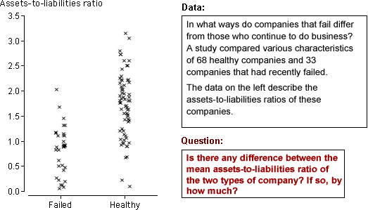

Two-group data sets

Use these examples to explain that we are interested in comparing the two underlying populations. The specific individuals in the two samples are of little interest.
The data sets are described in the questions.